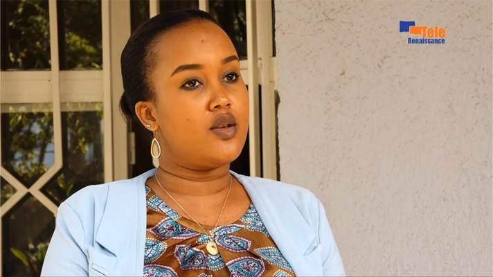
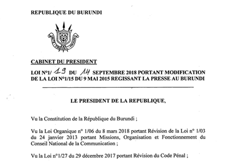
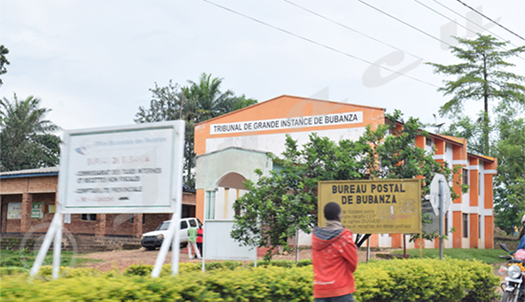
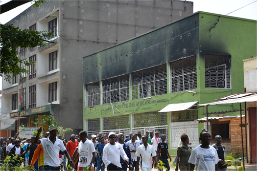

A political call to action turned a trip to a family-member’s funeral into a 10-year prison sentence with a fine of $1 million Burundian francs for journalist Floriane Irangabiye in August of 2022. Today, she is serving out that sentence in Bubanza prison on charges of undermining the integrity of the national territory.

“The population is resigned to the evils of the leaders of Burundi; citizens do not express themselves for fear of being killed. We call on Burundians to brave the fear.”
Irangabiye’s statement was made on her live radio show during an interview with human rights defense attorney and activist, Janvier Bigirimana, and journalist and director of Radio Publique Africaine, Bob Rugurika - both exiled and both of whom criticized Burundi’s human rights record.
In Rwanda, where Irangabiye has resided since 2009, the statement is constitutionally protect by article 38 - which sets the conditions for “exercising and respect for freedom of press, of expression and of access to information.”

Burundi, where she was arrested August 30th during a visit to her family in Bujumbura, has Law No. 1/019; better known as the “Press Law”. Human rights defense lawyer and founder of SOS-Torture Burundi, Armel Niyongere, attested, “In its article 21, this law provides, among other things, that freedom of the press is guaranteed in Burundi and that all media have the right to access sources of information.”
Even international human rights law protects the freedom of expression through the Universal Declaration of Human Rights’ article 19. But none of these legal protections made the difference in this case.

According to the Burundi Human Rights Initiative, during her trial judges said that Irangabiye “didn’t have the right” to interview Rugurika because of an arrest warrant against him. Rugurika was convicted in absentia of state security crimes alongside 33 other people, 12 of which were exiled human rights defenders and journalists, accused of participating in a coup attempt in May of 2015 during the nation’s unrest.
BHRI noted that the court dismissed her lawyer’s arguments pointing out the right to free expression under the constitution of Burundi. The human rights organization reports the court said in its conclusion that the right to free speech did not entitle Irangabiye to call people to rebel against the government or “offend the government and its democratically elected officials.”
Burundi has experienced shifts between democratic systems and authoritarian regimes since gaining independence from Belgium in 1962. The landlocked East African country has a history of ethnic conflicts, civil wars, and coups. The country faces ongoing challenges with political power struggles and corruption, impacting its democratic processes.

In 2015, sociopolitical unrest erupted over former President Pierre Nkurunziza’s controversial third-term bid, sparking widespread protests and subsequent violence, with some targeting journalists and press organizations directly. The unrest led to the exile of many journalists and nongovernmental organizations, overshadowing the country’s efforts to stabilize its democratic foundations and redress past human rights violations.
The ruling-party system in Burundi, currently led by the National Council for the Defense of Democracy – Forces for the Defense of Democracy (CNDD-FDD), has wielded significant influence over the nation’s political landscape, impacting social structures and governance processes.